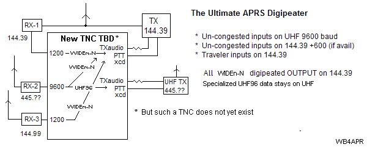
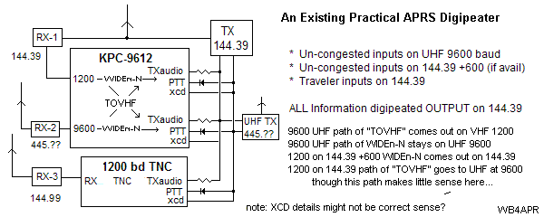

What is the Ultimate APRS digipeater? (based on recent discussions on the APRSSIG)...
The diagram below are some ideas on the ultimate APRS digipeater. All information is available to the mobile operator on 144.39 (or other national freq). But all local user inputs are moved over to an uncongested input-only frequency such as 144.99 (which is +600 from 144.39 (if available)). Also 9600 baud users TX on UHF and are also digipeated on 144.39 at 1200 baud. But exclusive 9600 baud future traffic can stays on UHF for future applications if desired.

However, such a digipeater does not yet exist. In the meantime, one can make a close approximation using a KPC-9612 or several TinyTrack or other digipeater boards. But one has to cross connect the TX audios and PTT's and XCDs all to the same 144.39 transmitter. And also the UHF 9600 baud users have to use the special "gateway" path of "TOVHF" inorder for their packets to be converted to 1200 baud so that everyone can see them. Here is a drawing:

Clearly we need a lot more discussion here. But we do need to start thinking forward.
Back To APRS.ORG |